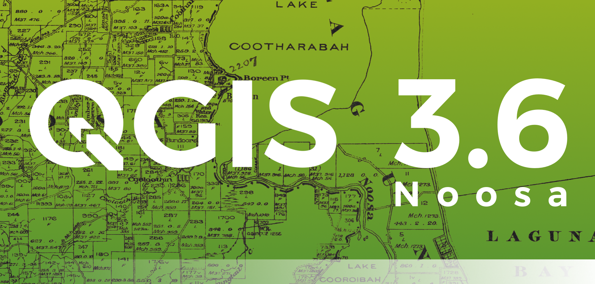
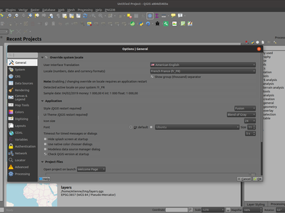
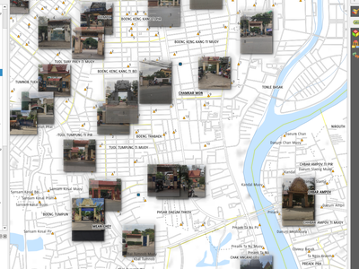
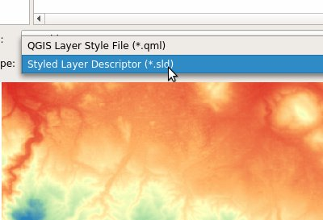
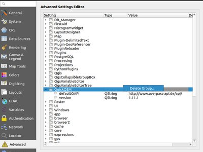
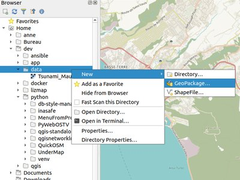
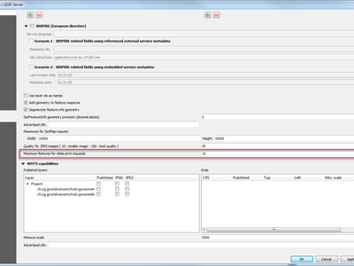
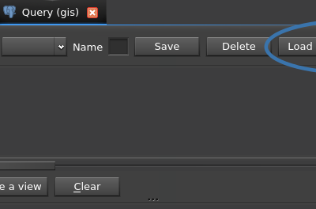

Log met wijzigingen voor QGIS 3.6¶

De grootste uitgave van QGIS ooit! QGIS 3.6 brengt een enorme lijst met nieuwe wijzigingen - de hoogtepunten daarvan zullen we hier proberen te behandelen. Zoals altijd herinneren we u er aan dat QGIS een open bron project is en vragen u om als het mogelijk is ons werk te ondersteunen door donaties, sponsoring of bijdragen aan de documentatie van de code, website, enzovoort.
Dank u wel
We willen onze dank uitspreken aan alle ontwikkelaars schrijvers van documentatie, testers en alle andere mensen die vrijwillig hun tijd en inspanningen ter beschikking stellen (of mensen sponsoren om dat te kunnen doen). Vanuit de QGIS gemeenschap hopen we dat u van deze uitgave zult genieten! Als u tijd of geld wilt doneren of op een andere wijze betrokken wilt zijn in het opwaarderen van QGIS, kijk dan ook eens op qgis.org en help een handje!
QGIS wordt ondersteund door donoren en sponsors. Een actuele lijst van donoren die grote en kleine bijdragen hebben gegeven aan het project kan worden bekeken op onze lijst met donoren. Als u een officiële sponsor voor het project zou willen worden, bekijk dan onze pagina om te sponsoren voor details. Het sponsoren van QGIS helpt ons om fondsen te verkrijgen voor onze halfjaarlijkse ontmoetingen van ontwikkelaars, de infrastructuur van het project te onderhouden en inspanningen voor het oplossen van bugs te financieren. Een volledige lijst van huidige sponsoren wordt hieronder weergegeven - een welgemeende dank u voor al onze sponsoren!
QGIS is gratis software en u bent niet verplicht om maar iets te betalen voor het gebruik ervan - in feite willen we mensen, wijd en zijd verspreid, aanmoedigen om het te gebruiken ongeacht uw financiële of sociale status - wij geloven dat het uitrusten van mensen met gereedschappen voor het maken van ruimtelijke beslissingen zal resulteren in een betere wereld voor de gehele mensheid.
- Kaartgereedschap
- Mogelijkheid: Titellabel-decoratie
- Mogelijkheid: Boven/onder centreren voor decoratie items
- Mogelijkheid: Gereedschap Punten reparaties en verbeteringen
- Selecteren (“vergrendelen”) van een object voor het bewerken
- Nieuw punt toevoegen zonder het te verplaatsen
- Modus “Huidige laag” is nu de standaard
- Mogelijkheid: Verkleind/Vergroot
- Mogelijkheid: Rechthoek uit 3 punten (geprojecteerd)
- Mogelijkheid: Gereedschap Identificeren voor lagen met mazen
- Expressies
- Gebruikersinterface
- Symbologie
- Mogelijkheid: Verbeterde afhandeling van stijlbibliotheken voor .XML
- Mogelijkheid: Optioneel forceren van de Rechterhand-regel gedurende het renderen van symbolen voor polygonen
- Mogelijkheid: Optie voor eenvoudige lijnen en markeringslijnen om alleen de buitenste ring of binnenste ringen te renderen
- Mogelijkheid: Rasterafbeelding als puntsymbool
- Mogelijkheid: Vulling voor raster mag afbeeldingen hebben ingesteld naar URL’s op afstand of ingebedde afbeeldingen
- Mogelijkheid: Weergavewaarden gebruiken voor geklassificeerde renderers
- Mogelijkheid: Optie om categorieën samen te voegen in renderer Categorieën
- Mogelijkheid: Projectkleuren weergeven in kleurgebonden data-gedefinieerde knoppen
- Mogelijkheid: Verbeteringen aan dialoogvenster stijlbeheer
- Mogelijkheid: SLD exporteren voor rasterstijlen
- Digitaliseren
- Gegevensbeheer
- Formulieren en widgets
- Printvormgeving
- Mogelijkheid: Grid frame verbeteringen
- Mogelijkheid: Verbeterde behandeling van exporteren van tekst en labels
- Mogelijkheid: Verbeteringen voor kaartlabels
- Mogelijkheid: Sneltoetsen voor bereik/schaal van kaartitems opnieuw bewerkt
- Mogelijkheid: Items van lay-out mogen kaartlabels “blokkeren”
- Mogelijkheid: Waarschuwingen voor exporteren
- Mogelijkheid: Beheer over stapelpositie van bereiken van overzichtskaarten
- Mogelijkheid: Nieuwe variabelen voor expressies voor items van de legenda
- Mogelijkheid: Expressies binnen tekst van een item voor legenda
- Analyse-gereedschappen
- Processing
- Mogelijkheid: Nieuw algoritme “Duplicaten van attributen verwijderen”
- Mogelijkheid: Algoritme Explode HStore
- Mogelijkheid: Rechterhand-regel forceren
- Mogelijkheid: Algoritme Binair veld uitnemen
- Mogelijkheid: Algoritme Lijnen splitsen op maximum lengte
- Mogelijkheid: Nieuw type parameter voor configureren van authenticatie
- Mogelijkheid: Opties voor resamplen en indeling in het algoritme gdaladdo
- Mogelijkheid: Algoritme Rastergebiedsstatistieken
- Mogelijkheid: Algoritmes Z-waarden uitnemen en M-waarden uitnemen
- Mogelijkheid: Algoritme Geodesische lijn gesplitst op antimeridiaan
- Mogelijkheid: Geodesische modus voor algoritme “Join by Lines (Hub lines)”
- Mogelijkheid: Algoritme Rasteroppervlak volume
- Mogelijkheid: Herrezen functionaliteit model naar Python-script
- Opties voor toepassing en projecten
- Browser
- Mogelijkheid: Opties “Naar bestand exporteren” voor raster- en vectorlagen in de browser
- Mogelijkheid: Eigen eigenschappen bestand/map
- Mogelijkheid: Voorbeeld lagen en attributen
- Mogelijkheid: QGS/QGZ projectbestanden verkennen in de browser
- Mogelijkheid: Het rechtstreeks aanmaken van Geopackage- en Shapebestanden.
- Mogelijkheid: Terminal openen in pad
- Algemeen
- Gegevensproviders
- Mogelijkheid: Open service info voor ArcGIS Feature Server-lagen
- Mogelijkheid: Binaire blob ondersteuning voor OGR provider
- Mogelijkheid: Ondersteuning voor markering afbeelding en vullen afbeelding voor ArcGIS Feature Server
- Mogelijkheid: Ondersteuning voor labelen van ArcGIS Feature Server
- Mogelijkheid: Ondersteuning voor geheugenlagen met Booleaanse en binaire velden
- Mogelijkheid: Ondersteuning voor JSON voor GeoPackage
- Mogelijkheid: provider Postgres: selectie primaire sleutel opslaan
- Mogelijkheid: Ondersteuning voor unieke waarden in meervoudige velden van ArcGIS Feature Server
- QGIS Server
- Plug-ins
- Programmeerbaarheid
- Mogelijkheid: Nieuwe klasse QgsExifTools
- Mogelijkheid: Doorlopen over een delen van een QgsGeometry
- Mogelijkheid: Verbeterde QgsLineString PyQGIS API
- Mogelijkheid: Verbeteringen aan PyQGIS Geometry Collection API
- Mogelijkheid: Eenvoudiger maken van algoritme voor Processing via @alg decorateur
- Mogelijkheid: Blokkeren van (niet-async) netwerkverzoeken
- Mogelijkheid: Aangepaste controles voor geldigheid voor exports van lay-out
- Mogelijkheid: API voor berekenen van geodetische lijnen
- Mogelijkheid: Nieuwe klasse QgsQuadrilateral
- 3D-objecten
- Belangrijke reparaties
- Mogelijkheid: Reparaties van problemen door Alessandro Pasotti
- Mogelijkheid: Reparaties van problemen door Alexander Bruy
- Mogelijkheid: Reparaties van problemen door Jürgen Fischer
- Mogelijkheid: Reparaties van problemen door Peter Petrik
- Mogelijkheid: Reparaties van problemen door Julien Cabieces
- Mogelijkheid: Reparaties van problemen door Loïc Bartoletti
- Mogelijkheid: Reparaties van problemen door Victor Olaya
- Mogelijkheid: Reparaties van problemen door Even Rouault
- Mogelijkheid: Reparaties van problemen door Martin Dobias
- Mogelijkheid: Reparaties van problemen door Nyall Dawson
- Mogelijkheid: Reparaties van problemen door Hugo Mercier
Kaartgereedschap¶
Mogelijkheid: Titellabel-decoratie¶
Een nieuwe decoratie werd toegevoegd om gebruikers toe te laten snel een titel weer te geven op hun kaartvenster. De decoratie heeft een achtergrondbalk met een instelbare kleur en transparantie.

Deze mogelijkheid werd ontwikkeld door Mathieu Pellerin
Mogelijkheid: Boven/onder centreren voor decoratie items¶
Kaartvenster copyright en de nieuw toegevoegde titellabel-decoratie kunnen nu gecentreerd worden boven- of onderaan de kaartweergave.
Deze mogelijkheid werd ontwikkeld door Mathieu Pellerin
Mogelijkheid: Gereedschap Punten reparaties en verbeteringen¶
Opmerking: alle hieronder vermelde items zijn ook aan de LTR toegevoegd, zodat ze ook in QGIS 3.4.5 zullen verschijnen.
Selecteren (“vergrendelen”) van een object voor het bewerken¶
In QGIS 2.18 moest je altijd eerst een object selecteren om het te bewerken. In QGIS 3 bestond zoiets niet, want bewerken kon op elk object op elk moment. Nu maken we het selecteren (“vergrendelen”) van objecten weer beschikbaar, door rechts klikken.
In eerdere versies van QGIS3, gaf rechts klikken een klein popup menu weer dat de weergave van van de punten bewerker aanbood. Nu wordt bij rechts klikken onmiddellijk de punten bewerker weergegeven en het bewerken van andere objecten uitgeschakeld.
Wanneer een object “vergrendeld” is, kan het terug ontgrendeld worden door er op te klikken of door op een leeg gebied te klikken. Dit brengt ons terug naar de standaard modus waar meerdere objecten bewerkt kunnen worden.
Wanneer er meerdere objecten op één muislocatie staan zal herhaald met rechts klikken door die objecten gaan - met elke rechtsklik zult u een ander object zien. Tenslotte, als alle objecten zijn aangeboden, zal geen object worden vergendeld en zal een volgende klik met rechts de doorloop opnieuw starten.
Het vergendelen is mogelijk door te klikken op een punt, rand of interieur (voor polygonen) van een object.
Nieuw punt toevoegen zonder het te verplaatsen¶
Het is nu mogelijk om Shift + dubbelklik te gebruiken om een nieuw punt toe te voegen zonder het op een nieuwe locatie te plaatsen. Soms is dit handig als gebruikers een extra punten willen plaatsen op de bestaande segmenten.
Modus “Huidige laag” is nu de standaard¶
Van de twee modi in het gereedschap Punten werd “Alle lagen” gebruikt als de standaard. Uit terugkoppelingen van gebruikers bleek dat het minder voorkomende gebruik te zijn en gebruikers hebben een voorkeur voor “Huidige laag” als standaard.
Dit werd mogelijk gemaakt door Duitse QGIS gebruikersgroep
Deze mogelijkheid werd ontwikkeld door Martin Dobias (Lutra Consulting)
Mogelijkheid: Verkleind/Vergroot¶
Anders dan in andere software stelt het gereedschap u in staat (multi)lijnen EN (multi)polygonen aan te passen. Meer nog, het is niet noodzakelijkerwijze het einde van de lijnen dat is betrokken; elk segment van een geometrie kan worden aangepast. De andere kant is dat dit kan leiden tot ongeldige geometrieën, het is de verantwoordelijkheid van de gebruiker.
Het gereedschap vraagt u een grens te kiezen (een segment) waarop een ander segment zal worden vergroot of verkleind. Anders dan het gereedschap Knoop wordt een controle uitgevoerd om alleen de laag aan te passen die wordt bewerkt.
Als beide segmenten 3D zijn, voert het gereedschap een interpolatie uit op het grenssegment om de Z terug te geven.
In het geval van verkleinen moet u het deel selecteren dat moet worden verkort door erop te klikken.
Dit werd mogelijk gemaakt door Mairie de Megève
Deze mogelijkheid werd ontwikkeld door Loïc Bartoletti (Oslandia)
Mogelijkheid: Rechthoek uit 3 punten (geprojecteerd)¶
Er is al een methode om een rechthoek uit 3 punten te maken waarbij de rechthoek een lengte krijgt van tussen het eerste en tweede punt en de tweede lengte gelijk is aan de afstand tussen het 3e en 2e punt.
Deze nieuwe methode maakt het mogelijk een rechthoek te maken uit 3 punten waarbij de tweede lengte de afstand is tussen het punt en het loodrecht geprojecteerde punt op het segment (of de uitbreiding daarvan).
Deze mogelijkheid werd ontwikkeld door Loïc Bartoletti (Oslandia)
Mogelijkheid: Gereedschap Identificeren voor lagen met mazen¶
Het gereedschap identificarenwerkt nu op de laag met mazen. Het geeft de huidige waarde weer van scalaire en vectorcomponenten van de mazen.

Dit werd mogelijk gemaakt door Lutra Consulting
Deze mogelijkheid werd ontwikkeld door Peter Petrik (Lutra Consulting)
Expressies¶
Mogelijkheid: Nieuwe functies voor expressies¶
force_rhr: forceert polygonen om de Rechterhand-regel te respecteren, waarin het gebied dat is gebonden aan een polygoon aan de rechterkant van de grens ligt. In het bijzonder de buitenste ring is georiënteerd in de richting met de klok mee en de binnenste ringen in de richting tegen de klok in.decode_uri: neemt een parameter voor een laag en een optionele parameter voor het gedeelte van de URI. Het zal details teruggeven over de gegevensbron van de laag. De beschikbare details zijn afhankelijk van de gegevensprovider. Indien aangeroepen met alleen een parameter voor de laag, zal een kaart worden teruggegeven met alle beschikbare informatie. Indien het gedeelte van de URI ook wordt gespecificeerd, zal alleen de waarde voor het verzochte gedeelte worden uitgenomen uit de kaart.pathis toegevoegd als een optie voor de functie voor expressieslayer_propertyarray_sort: sorteert een array van elementennullif- sqlite_ophalen_en_verhogen
make_rectangle_3points: Maak een rechthoek uit 3 punten. Er zijn twee opties voor het maken van de rechthoek: op afstand of een projectie. Optie afstand: Tweede afstand is gelijk aan de afstand tussen het 2e en 3e punt. Optie geprojecteerd: Tweede afstand is gelijk aan de afstand van de loodrechte projectie van het 3e punt op het segment of de uitbreiding daarvan.make_square: Maakt een vierkant uit een diagonaal.- from_json
- to_json
Mogelijkheid: Vierkante haken om eenvoudig toegang te krijgen tot array-elementen van de kaart¶
Maakt expressies mogelijkzoals:
- array(1,2,3)[0] -> 1
- array(1,2,3)[2] -> 3
- array(1,2,3)[-1] -> 3 (Python-stijl, negatieve indexen tellen vanaf het einde van de array)
- array(1,2,3)[-3] -> 1
- map(‘a’,1,’b’,2)[‘a’] -> 1
- map(‘a’,1,’b’,2)[‘b’] -> 2
Deze mogelijkheid werd ontwikkeld door Nyall Dawson, Mathieu Pellerin
Mogelijkheid: Nieuwe variabelen voor expressies voor kaart¶
- @map_crs_description: naam van het coördinatenreferentiesysteem van de kaart.
- @map_crs_acronym: acroniem van het coördinatenreferentiesysteem van de kaart.
- @map_ellipsoid_acr: acroniem van de ellipsoïde van het coördinatenreferentiesysteem van de kaart.
- @map_crs_proj4: Proj4-definitie van het coördinatenreferentiesysteem.
- @map_crs_wkt: WKT-definitie van het coördinaten referentiesysteem.
Deze mogelijkheid werd ontwikkeld door Alexis Roy-Lizotte
Mogelijkheid: Nieuwe funtie try() om fouten te vangen¶
De nieuwe functie try() probeert een expressie en geeft de waarde ervan terug indien foutenvrij. Als de expressie een fout teruggeeft zal een alternatieve waarde worden teruggegeven, indien opgegeven, anders zal de functie null teruggeven.
Deze mogelijkheid werd ontwikkeld door Mathieu Pellerin
Gebruikersinterface¶
Mogelijkheid: Een nieuw thema: “Blend of Gray” voor grijswaarden¶
Een nieuw thema voor de gebruikersinterface heeft zijn wge gevonden in QGIS, genaame “Blend of Gray”. In aanvulling daarop werden honderden reparaties, tweaks en verfijningen toegepast op het reeds bestaande thema “Night Mapping”.

Deze mogelijkheid werd ontwikkeld door Mathieu Pellerin
Mogelijkheid: Meerregelige selecties en bewerken in bewerkers voor code/expressies¶
Indrukken van Ctrl tijdens het selecteren in de bewerkers voor expressies en Python-scripts in QGIS stelt u in staat een meerregelig blok tekst te selecteren, die in één keer kan worden bewerkt.
Deze mogelijkheid werd ontwikkeld door Nyall Dawson ()
Symbologie¶
Mogelijkheid: Verbeterde afhandeling van stijlbibliotheken voor .XML¶
Het paneel Browser geeft nu stijlbibliotheken voor XML in QGIS weer en deze bestanden kunnen ook worden versleept en worden neergezet in een venster van QGIS. Dit opent een dialoogvenster dat gebruikers in staat stelt de stijlbibliotheek te verkennen en stijlen uit de bibliotheek te importeren naar hun installatie van QGIS.
Deze mogelijkheid werd mogelijk gemaakt door: North Road
Deze mogelijkheid werd ontwikkeld door Nyall Dawson (North Road)
Mogelijkheid: Optioneel forceren van de Rechterhand-regel gedurende het renderen van symbolen voor polygonen¶
Deze nieuwe optie, beschikbaar onder de knop “Geavanceerd” voor het vullen van symbolen, maakt het mogelijk te forceren voor gerenderde polygonen om de standaard “Rechterhand-regel” te volgen voor de richting van de ringen (waarbij de buitenste ring met de klok mee gaat en de binnenste ringen allemaal tegen de klok in).
De reparatie voor de richting wordt alleen toegepast tijdens het renderen, en de originele geometrie van het object wordt niet gewijzigd.
Dit maakt het maken van gevulde symbolen met een consistent uiterlijk mogelijk, ongeacht de gegevensset die wordt gebruikt bij het renderen en de richting van de ringen van individuele objecten.
Deze mogelijkheid werd mogelijk gemaakt door de Duitse QGIS gebruikersgroep
Deze mogelijkheid werd ontwikkeld door: Nyall Dawson (North Road)
Mogelijkheid: Optie voor eenvoudige lijnen en markeringslijnen om alleen de buitenste ring of binnenste ringen te renderen¶
Deze nieuwe optie wordt weergegeven wanneer een symbool voor een eenvoudige lijn of een symbool voor een markeringslijn wordt gebruikt als deel van een vulsymbool voor het renderen van polygonen. Het standaard gedrag is om zowel de binnenste als de buitenste ringen te renderen, maar deze nieuwe instelling maakt het voor gebruikers mogelijk om de symboollaag zo in te stellen dat alleen de buitenste ring OF alleen de binnenste ringen worden gerenderd. Dit maakt symboliseren mogelijk, wat eerder niet direct mogelijk was, zoals een markeringslijn met markeringen voor binnenste ringen in een hoek naar het binnenste van de polygoon.
Deze mogelijkheid werd mogelijk gemaakt door de Duitse QGIS gebruikersgroep
Deze mogelijkheid werd ontwikkeld door: Nyall Dawson (North Road)
Mogelijkheid: Rasterafbeelding als puntsymbool¶
Een nieuw type symbologie voor punten als rasterafbeeldingen werd toegevoegd aan QGIS die gebruikers in staat stelt een raster, d.i. bitmap, afbeeldingsbestand te gebruiken en weer te geven als een puntsymbool. De symbologie voor punten als rasterafbeelding staat aanpassen van de breedte, hoogte, verhoudingen van de afbeelding, rotatie, en transparantie toe.
Gebruik maken van een gegevens-gedefinieerde afbeeldingsbron maakt deze nieuwe symbologie een fantastische methode om afbeeldingen met geoverwijzingen weer te geven op een kaartvenster.

Deze mogelijkheid werd ontwikkeld door Mathieu Pellerin
Mogelijkheid: Vulling voor raster mag afbeeldingen hebben ingesteld naar URL’s op afstand of ingebedde afbeeldingen¶
Net zoals de SVG en markering voor rasterafbeeldingen, kan de vulling voor rasters nu worden ingesteld om URL’s naar HTTP(s) te gebruiken of bestanden direct hebben ingebed binnen het symbool zelf.
Deze mogelijkheid werd ontwikkeld door Mathieu Pellerin
Mogelijkheid: Weergavewaarden gebruiken voor geklassificeerde renderers¶
Wanneer een veld is geconfigureerd met een relatie naar een waarde, waardenkaart of andere “weer te geven waarde” en het veld wordt gebruikt als bron vor een renderer van classificatie, zullen de weer te geven waarden worden gebruikt om de catgeorieën te labelen.
Deze mogelijkheid werd ontwikkeld door Matthias Kuhn
Mogelijkheid: Optie om categorieën samen te voegen in renderer Categorieën¶
Deze wijziging stelt gebruikers in staat om meerdere bestaande categorieën te selecteren en die te groeperen naar één enkele categorie, die wordt toegepast op elke waarde in de selectie.
Dit maakt het mogelijk lagen met een groot aantal categorieën eenvoudiger op te maken, waarbij het mogelijk is meerdere afzonderlijke categorieën naar een kleinere, meer beheersbaarder set van categorieën te groeperen, die van toepassing is op meerdere waarden.
De optie is beschikbaar in het contextmenu, klik met rechts, in de lijstweergave van de categorieën, wanneer meerdere categorieën zijn geselecteerd.

Dit werd mogelijk gemaakt door SMEC/SJ
Deze mogelijkheid werd ontwikkeld door Nyall Dawson (North Road)
Mogelijkheid: Projectkleuren weergeven in kleurgebonden data-gedefinieerde knoppen¶
Dit voegt een nieuw gedeelte “Projectkleuren” toe aan data-gedefinieerde knoppen die zijn gekoppeld aan een kleurwaarde. Het menu Kleur bevat alle kleuren die zijn gedefinieerd als deel van het kleurenschema van het project voor het huidige project (dat wordt gedefinieerd in de Projecteigenschappen).
Wanneer een projectkleur wordt gekozen uit de knop, wordt de eigenschap gekoppeld aan die kleur. Het zal automatisch elke toekomstige wijziging aan de kleur volgen die worden gemaakt via de Projecteigenschappen.
Dit maakt het mogelijk dat gebrukers eenmalig veel voorkomende kleuren kunnen definiëren voor een project en dan kleuren voor symbolen, labels, lay-outs, etc “binden” aan deze vooraf ingestelde kleuren. De koppeling is live, dus als u die eenmaal wijzigt wordt de wijziging OVERAL zichtbaar. Veel beter dan het 100 keer bijwerken van een kleur als het gebruik daarvan is verspreid over de symbolen, labels, etc.. van een project.
Deze mogelijkheid werd mogelijk gemaakt door: North Road
Deze mogelijkheid werd ontwikkeld door Nyall Dawson (North Road)
Mogelijkheid: Verbeteringen aan dialoogvenster stijlbeheer¶
Het dialoogvenster Stijl manager heeft een aantal verbeteringen ondergaan:
- Een nieuwe modus “Lijstweergave” is toegevoegd
- Een tab “Alles” is toegevoegd die alle overeenkomende symbolen weergeeft (ongeacht het type symbool)
Deze mogelijkheid werd ontwikkeld door Nyall Dawson (North Road)
Mogelijkheid: SLD exporteren voor rasterstijlen¶
QGIS is nu in staat rasterstijlen te exporteren naar SLD, bijvoorbeeld om te worden gebruikt in Geoserver. Bekijk: https://docs.geoserver.org/latest/en/user/styling/qgis/index.html#exporting-raster-symbology

Dit werd mogelijk gemaakt door OSGeo UK, GeoServer PSC, Brad Hards
Deze mogelijkheid werd ontwikkeld door Luigi Pirelli en GeoSolutions
Digitaliseren¶
Mogelijkheid: Verbeteringen aan Georeferencer¶
- dX, dY en residu toegevoegd aan GCP-punten
- optie toegevoegd om automatisch GCP-punten op te slaan in het raster-aangepaste pad

Deze mogelijkheid werd ontwikkeld door Faneva Andriamiadantsoa
Mogelijkheid: Nieuwe optie om minimaliseren van Georeferencer bij het toevoegen van punten te voorkomen¶
Gebruikers kunnen er nu voor kiezen om het automatisch minimaliseren van het venster van georeferencer, dat voorkomt bij het toevoegen van nieuw grondcontrolepunten aan het kaartvenster, te voorkomen. Dit gedrag kan irritant zijn op setups met meerdere schermen, waar het wenselijk kan zijn om beide vensters zichtbaar te hebben bij het toevoegen van punten.
Deze mogelijkheid werd ontwikkeld door Nyall Dawson (North Road)
Gegevensbeheer¶
Mogelijkheid: Optie Opmerking in DB Manager¶
Deze mogelijkheid werd ontwikkeld door Corentin Falcone (SIRS)
Formulieren en widgets¶
Mogelijkheid: Nieuw formulierwidget voor binaire (blob)-velden¶
Deze widget is alleen beschikbaar voor binaire velden (en wordt als standaard widget gebruikt voor binaire velden). Het biedt een label om aan te geven of het blob veld leeg is of niet. Als het niet leeg is, geeft het de inhoudsgrootte weer (in bytes/kb/enz.).
Een knop met keuzemenu laat gebruikers toe om de huidige binaire inhoud van het veld op te slaan naar een schijf gebaseerd bestand, de inhoud van een blob veld leeg te maken, of binaire inhoud te inbedden door een bestand te selecteren van hun systeem.
Dit werd mogelijk gemaakt door SMEC/SJ
Deze mogelijkheid werd ontwikkeld door Nyall Dawson (North Road)
Printvormgeving¶
Mogelijkheid: Grid frame verbeteringen¶
Gebruikers kunnen nu een marge instellen voor de grid frames in hun lay-out kaart onderdelen. Aanvullend werden nieuwe “Zebra (Nautisch)” en “Lijnrand (Nautisch)” frame stijlen toegevoegd, die blokken in nautische stijl weergeven in de grid hoeken als een marge is ingesteld voor het grid.
Deze mogelijkheid werd ontwikkeld door konst
Mogelijkheid: Verbeterde behandeling van exporteren van tekst en labels¶
Bij het exporteren van een afdruklay-out naar PDF- of SVG- indelingen hebben gebruikers nu de keuze over hoe tekst en labels binnen die lay-out zouden moeten wordne geëxporteerd. Beschikbare opties worden geconverteerd naar allemaal tekst voor omtrekken/bogen (de eerdere standaard), of om tekst en labels als tekstobjecten te behouden.
Deze mogelijkheid werd ontwikkeld door Nyall Dawson (North Road)
Mogelijkheid: Verbeteringen voor kaartlabels¶
Verscheidene verbeteringen zijn gemaakt met betrekking tot hoe labels worden gerenderd in kaartitems van lay-out.
- Een nieuwe instelling maakt beheer per kaart mogelijk over hoe dicht labels mogen worden geplaatst vanaf de randen van de kaart. Grootten kunnen worden ingesteld met behulp van mm/inches/pixels/etc, en data-gedefinieerde labelmarges zijn toegestaan.
- Een nieuwe instelling maakt beheer per kaart mogelijk of gedeeltelijke labels zichtbaar zijn op de kaart. Dit staat standaard uit, (anders dan de instelling voor het kaartvenster die standaard aan staat voor een nieuw project) omdat lay-outs altijd standaard de instellingen zouden moeten gebruiken die de hoogste kwaliteit cartografische uitvoer produceren.
Deze mogelijkheid werd mogelijk gemaakt door: North Road
Deze mogelijkheid werd ontwikkeld door Nyall Dawson (North Road)
Mogelijkheid: Sneltoetsen voor bereik/schaal van kaartitems opnieuw bewerkt¶
De knoppen voor het instellen van kaartitems voor lay-out om overene te komen met de huidige kaartweergave (en vice versa) zijn naar boven verplaatst naar een nieuwe werkbalk in het venster voor eigenschappen van kaartitems.
Nieuwe acties zijn ook toegevoegd om de schaal van kaartitems overeen te laten komen met de schaal van het kaartvenster, en om de schaal van het kaartvenster overeen te laten komen met de schaal van de geselecteerde lay-out. Deze spiegelen de bestaande instellingen voor het instellen van het bereik van het kaartvenster en drijven het bereik NAAR het kaartvenster.
Deze mogelijkheid werd mogelijk gemaakt door: North Road
Deze mogelijkheid werd ontwikkeld door Nyall Dawson (North Road)
Mogelijkheid: Items van lay-out mogen kaartlabels “blokkeren”¶
Deze mogelijkheid geeft andere items voor de lay-out (zoals schaalbalken, Noordpijlen, ingevoegde kaarten, etc) de mogelijkheid te worden gemarkeerd als “blokkeringen” voor de kaartlabels in een kaartitem. Dit voorkomt dat kaartlabels onder deze items worden geplaatst - wat er voor zorgt dat het programma voor de labels probeert een alternatieve plaatsing voor die te vinden (of ze geheel negeert).
Dit maakt cartografisch meer aantrekkelijke kaarten mogelijk – plaatsen van labels onder andere items kan ze moeilijk te lezen maken, maar zonder deze nieuwe instelling is het niet eenvoudig om QGIS het plaatsen van labels op deze bedekte gebieden te laten vermijden.
De blokkerende items worden ingesteld door de eigenschappen van een kaartitem, in het paneel voor instellingen van het label. De instelling is per kaartitem, dus u kunt een schaalbalk hebben die de labels blokkeert in de ene kaart in uw lay-out, maar niet in andere (als u dat zou willen!)
Deze mogelijkheid werd mogelijk gemaakt door: North Road
Deze mogelijkheid werd ontwikkeld door Nyall Dawson (North Road)
Mogelijkheid: Waarschuwingen voor exporteren¶
Bij het exporteren van afdruklay-outs controleert QGIS nu automatisch de lay-out op veel voorkomende fouten en waarschuwt de gebruiker als die worden gevonden:
- Schaalbalken niet gekoppeld aan een kaartitem
- Items voor afbeeldingen met verbroken of ontbrekende paden, of gekoppeld aan onleesbare afbeeldingsbestanden
- Overzichtskaarten niet langer gekoppeld aan een geldig kaartitem
Dit werd mogelijk gemaakt door SMEC/SJ
Deze mogelijkheid werd ontwikkeld door Nyall Dawson (North Road)
Mogelijkheid: Beheer over stapelpositie van bereiken van overzichtskaarten¶
QGIS staat toe dat bereiken voor overzichtskaarten wordne getekend onder kaartlabels (de nieuwe standaard), maar in 3.6 zijn keuzes toegevoegd om ze te tekenen onder alle kaartlagen, of boven/onder een specifieke laag. Dit maakt het voor gebruikers mogelijk om exact te beheren waar in de stapel van lagen van het kaartitem het overzicht zal worden geplaatst, bijv. het mogelijk maken een bereik van een overzicht te tekenen onder enkele lagen met objecten zoals wegen, maar het tegelijkertijd boven andere achtergrondlagen te tekenen.
Deze mogelijkheid werd ontwikkeld door Nyall Dawson (North Road)
Mogelijkheid: Nieuwe variabelen voor expressies voor items van de legenda¶
Nieuwe variabelen voor expressies zijn toegevoegd om te gebruiken in data-gedefinieerde expressies in items van de legenda van een lay-out, inclusief:
- @legend_title
- @legend_column_count
- @legend_split_layers
- @legend_wrap_string
- @legend_filter_by_map
- @legend_filter_out_atlas
Als de legenda is gekoppeld aan een kaart, dan zullen de in die legenda gebruikte expressies ook toegang hebben tot de gekoppelde variabelen, inclusief @map_scale, @map_extent, etc.
Aanvullend gebruiken symbolen, gerenderd als deel van een legenda, de volledig beschikbare context van de expressie voor de legenda. Dit betekent dat de symbolen toegang hebben tot variabelen, zoals het huidige object Atlas.
Deze mogelijkheid werd ontwikkeld door Alexis Roy-Lizotte
Mogelijkheid: Expressies binnen tekst van een item voor legenda¶
Deze mogelijkheid maakt het mogelijk dat expressies direct worden ingebed in de tekst van een item voor de legenda (bijv. groep, subgroep en tekst van het item). De expressies worden geëvalueerd tijdens het renderen, met volledige kennis van de context van de expressie voor de legenda (kan dus variabelen gebruiken uit de lay-out/item voor de lay-out/etc)
Er is nog geen gebruikersinterface hiervoor (die zal komen in 3.8), maar expressies kunnen wordne ingevoerd met behulp van de standaard [% 1 + 2 %] indeling.
Bijvoorbeeld een item voor de legenda als
My layer (rendered at 1:[% @map_scale %])
zal in de uitvoer worden weergegeven als
My layer (rendered at 1:1000)
Deze mogelijkheid werd ontwikkeld door Nyall Dawson (North Road)
Analyse-gereedschappen¶
Mogelijkheid: Hardware-acceleratie voor rasterberekeningen¶
Acceleratie van OpenCL is nu standaard beschikbaar voor bewerkingen van rasterberekeningen
Deze mogelijkheid werd mogelijk gemaakt door Alessandro Pasotti - ItOpen
Deze mogelijkheid werd ontwikkeld door Alessandro Pasotti
Mogelijkheid: Mazen berekenen¶
Soortgelijk aan rasterberekeningen werkt Mazen berekenen op lagen met mazen. In aanvulling op de algemene functies verschaft Mazen berekenen ook functies voor het optellen van tijden. Als u bijvoorbeeld een netcdf hebt met dagelijkse temperaturen over een maand, kunt u de gemiddelde temperatuur over de gehele maand berekenen voor elke cel. De uitvoer kan worden gefilterd op tijdsduur of ruimtelijk bereik.
Dit werd mogelijk gemaakt door Lutra Consulting
Deze mogelijkheid werd ontwikkeld door Peter Petrik (Lutra Consulting)
Processing¶
Mogelijkheid: Nieuw algoritme “Duplicaten van attributen verwijderen”¶
Maakt het verwijderen van gedupliceerde objecten mogelijk, geïdentificeerd met behulp van de waarden in één (of meer) veldwaarden van de invoerobjecten. Optioneel kunnen genegeerde (duplicaat)-objecten worden opgeslagen in een afzonderlijke afvoer.

Dit werd mogelijk gemaakt door SMEC/SJ
Deze mogelijkheid werd ontwikkeld door Nyall Dawson (North Road)
Mogelijkheid: Algoritme Explode HStore¶
Dit algoritme maakt een kopie van een invoerlaag en voegt een nieuw veld in voor elke unieke sleutel in het veldtype HStore. Een veld HStore is bijvoorbeeld vaak aanwezig in een gegevensset van OSM (“other_tags”).

Deze mogelijkheid werd ontwikkeld door Etienne Trimaille
Mogelijkheid: Rechterhand-regel forceren¶
Dit nieuwe algoritme forceert geometrieën polygoon om de Rechterhand-regel te respecteren, waarin het gebied dat is gebonden aan een polygoon aan de rechterkant van de grens ligt. In het bijzonder de buitenste ring is georiënteerd in de richting met de klok mee en de binnenste ringen in de richting tegen de klok in.
Deze mogelijkheid werd mogelijk gemaakt door de Duitse QGIS gebruikersgroep
Deze mogelijkheid werd ontwikkeld door Nyall Dawson (North Road)
Mogelijkheid: Algoritme Binair veld uitnemen¶
Dit algoritme stelt gebruikers in staat de inhoud uit binaire velden te nemen en op te slaan in bestanden.

Dit werd mogelijk gemaakt door SMEC/SJ
Deze mogelijkheid werd ontwikkeld door Nyall Dawson (North Road)
Mogelijkheid: Algoritme Lijnen splitsen op maximum lengte¶
Dit algoritme neemt een invoer (meerdere) lijnen- (of boog-)laag en splitst elk object in meerdere delen, waarbij elk deel niet langer is dan de gespecificeerde maximale lengte.
Ondersteunt de data-gedefinieerde eigenschap voor maximum lengte, en de bewerking voor direct bewerken.

Deze mogelijkheid werd ontwikkeld door Nyall Dawson, Nathan Woodrow
Mogelijkheid: Nieuw type parameter voor configureren van authenticatie¶
Een nieuw type parameter voor algoritmes van Processing, QgsProcessingParameterAuthConfig, is toegevoegd, wat het mogelijk maakt een selectie te maken uit beschikbare configuraties voor authenticatie (en het maken van nieuwe).
Het maakt het mogelijk algoritmes voor processing te maken die volledig gebruik kunnen maken van de volwassen afhandeling van de authenticatie in QGIS, daardoor de noodzaak voor het gebruiken van onveilige tekenreeks-parameters voor gebruikers, om gevoelige inloggegevens in te voeren, te vermijden.
Parameters QgsProcessingParameterAuthConfig worden geëvalueerd met behulp van QgsProcessingAlgorithm.parameterAsString(), die de ID voor de geselecteerde configuratie voor de authenticatie teruggeeft.
Dit werd mogelijk gemaakt door SMEC/SJ
Deze mogelijkheid werd ontwikkeld door Nyall Dawson (North Road)
Mogelijkheid: Opties voor resamplen en indeling in het algoritme gdaladdo¶
Deze mogelijkheid werd ontwikkeld door Alex Bruy
Mogelijkheid: Algoritme Rastergebiedsstatistieken¶
Dit algoritme berekent statistieken voor de waarden van een rasterlaag, gecategoriseerd op gebieden gedefinieerd in een andere rasterlaag.

Deze mogelijkheid werd ontwikkeld door Nyall Dawson (North Road)
Mogelijkheid: Algoritmes Z-waarden uitnemen en M-waarden uitnemen¶
Deze algoritmes stellen gebruikers in staat de in object-geometrieën aanwezige Z- en M-waarden te converteren naar attributen in de laag.
Standaard wordt de Z/M-waarde uit het eerste punt in het object uitgenomen, maar optionele statistieken kunnen wordne berekend voor ALLE Z-/M-waarden uit de geometrie (bijv. berekenen van gemiddelde/min/max/som/etc van Z-waarden).
Deze mogelijkheid werd ontwikkeld door Nyall Dawson (North Road)
Mogelijkheid: Algoritme Geodesische lijn gesplitst op antimeridiaan¶
Dit algoritme splitst een lijn in meerdere geodesische segmenten wanneer de lijn de antimeridiaan (±180 graden longitude) kruist. Splitsen op de antimeridiaan helpt de visuele weergave van de lijnen in sommige projecties. De teruggegeven geometrie zal altijd een meerdelige geometrie zijn.
Wanneer lijnsegmenten in de invoergeometrie de antimeridiaan kruisen, zullen zij worden gesplitst in twee segmenten, waarbij de latitude van het breekpunt wordt bepaald met behulp van een geodesische lijn die de punten aan beide zijden van dit segment verbindt. De huidige instelling voor de ellipsoïde van het project zal bij het berekenen van het breekpunt worden gebruikt.
Als de invoergeometrie M- of Z-waarden bevat zullen die lineair worden geïnterpoleerd voor de nieuwe punten die worden gemaakt op de antimeridiaan.
Modus Direct bewerken wordt ook ondersteund.
Deze mogelijkheid werd ontwikkeld door Nyall Dawson (North Road)
Mogelijkheid: Geodesische modus voor algoritme “Join by Lines (Hub lines)”¶
Dit maakt het mogelijk optioneel geodesische lijnen te maken, die de kortste afstand tussen de punten weergeven, gebaseerd op de ellipsoïde.
Wanneer de modus Geodesisch wortd gebruikt is het mogelijk de gemaakte lijnen te splitsen op de antimeridiaan (±180 graden longitude), wat het renderen van de lijnen kan verbeteren. Aanvullend kan de afstand tussen de punten worden gespecificeerd. Een kleinere afstand resulteert in een dichtere, meer nauwkeuriger lijn.
Deze mogelijkheid werd ontwikkeld door Nyall Dawson (North Road)
Mogelijkheid: Algoritme Rasteroppervlak volume¶
Het SAGA rasteroppervlak volume is geporteerd naar een eigen alforitme van QGIS. De versie van SAGA van dit algoritme is van beperkt gebruik in QGIS, omdat het berekende volume alleen is ingebed in de uitvoer voor de terminal in SAGA. Dit voorkomt dat het wordt opgeslagen naar een bestand, of opnieuw gebruikt in een model als een invoer voor een latere stap in het model. Dientengevolge is het algoritme geporteerd naar een eigen QGIS C++-algoritme. Het algoritme dupliceert het algoritme voor SAGA 1:1, maar voert het volume (en gebied) uit naar ofwel een rapport in HTML, of een vectortabel. Aanvullend wordt de uitvoer geëxporteerd als numerieke uitvoer vanuit het algoritme, wat het mogelijk maakt ze opnieuw te gebruiken in modellen.

Deze mogelijkheid werd ontwikkeld door Nyall Dawson (North Road)
Mogelijkheid: Herrezen functionaliteit model naar Python-script¶
De 2.x mogelijkheid voor het direct converteren van een model van Processing naar een equivalent script voor Python is nieuw leven ingeblazen en bijgewerkt voor de 3.x API van Processing.

Deze mogelijkheid werd mogelijk gemaakt door Solspec
Deze mogelijkheid werd ontwikkeld door Nyall Dawson (North Road)
Opties voor toepassing en projecten¶
Mogelijkheid: Verwijderen van instellingen van de tab Geavanceerd in Opties¶
Deze wijziging voegt een nieuw menu voor rechtsklikken toe aan de instellingen die worden weergegeven op de tab “Geavanceerd” in het dialoogvenster Opties, wat gebruikers de mogelijkheid geeft die instelling te verwijderen (of groep van instellingen).

Deze mogelijkheid werd mogelijk gemaakt door: North Road
Deze mogelijkheid werd ontwikkeld door Nyall Dawson (North Road)
Browser¶
Mogelijkheid: Opties “Naar bestand exporteren” voor raster- en vectorlagen in de browser¶
Maakt het mogelijk deze bestanden direct te exporteren (bijv. naar een andere indeling, CRS, etc) zonder de noodzaak ze feitelijk eerst in het project te laden.

Deze mogelijkheid werd mogelijk gemaakt door Nyall Dawson (North Road)
Deze mogelijkheid werd ontwikkeld door Nyall Dawson (North Road)
Mogelijkheid: Eigen eigenschappen bestand/map¶
U kunt nu met rechts klikken op een bestand of een map in de browser en “Bestandseigenschappen” of “Mapeigenschappen” selecteren om het eigen dialoogvenster voor eigenschappen van bestand/map te openen voor dat item. Dit maakt snelle toegang mogelijk tot de eigenschappen van bestand of map van het besturingssysteem, zoals rechten voor bestanden en opties voor delen.
Deze mogelijkheid werd mogelijk gemaakt door: North Road
Deze mogelijkheid werd ontwikkeld door Nyall Dawson (North Road)
Mogelijkheid: Voorbeeld lagen en attributen¶
QGIS 3.6 brengt de functionaliteit terug van de oude 2.18 zelfstandige “browser” toepassing om vooraf de lagen en hun attributen te kunnen bekijken. Deze functionaliteit werd verplaatst naar het ingebouwde browser paneel en is beschikbaar door rechts te klikken op een laag en “eigenschappen” te selecteren (of door op de “widget eigenschappen inschakelen” knop te klikken in de browser werkbalk).

Dit werd mogelijk gemaakt door SMEC/SJ
Deze mogelijkheid werd ontwikkeld door Nyall Dawson (North Road)
Mogelijkheid: QGS/QGZ projectbestanden verkennen in de browser¶
Eerdere versies van QGIS gaven QGS/QGZ projectbestanden weer in de browser, waar ze konden worden geopend als nieuw actief project. In QGIS 3.6 werd deze functionaliteit uitgebreid en projectbestanden kunnen nu rechtstreeks verkend worden IN de browser zelf. Projecten zijn nu uitklapbare items en door ze uit te klappen wordt de volledige projectstructuur van groepen en lagen weergegeven. Elke laag kan dan gesleept en neergezet worden in het huidige project.
Deze mogelijkheid werd mogelijk gemaakt door: North Road
Deze mogelijkheid werd ontwikkeld door Nyall Dawson (North Road)
Mogelijkheid: Het rechtstreeks aanmaken van Geopackage- en Shapebestanden.¶
Rechtsklikken op een map in het browser paneel geeft nu een “Nieuw” menu weer dat items bevat om Geopackage, ShapeFile of submappen onder de geselecteerde map aan te maken.

Deze mogelijkheid werd mogelijk gemaakt door: North Road
Deze mogelijkheid werd ontwikkeld door Nyall Dawson (North Road)
Mogelijkheid: Terminal openen in pad¶
Een nieuwe contextmenu optie werd toegevoegd voor map items in het browser paneel om een nieuw terminal venster te openen in die map.
In Windows erft deze nieuwe terminal de omgeving van QGIS over, waardoor GDAL commando’s en Python scripts die PyQGIS gebruiken, werken zonder dat er nog instellingen van de omgeving aangepast moeten worden.
Terminal hackers verheug u!

Deze mogelijkheid werd ontwikkeld door Nyall Dawson (North Road)
Algemeen¶
Mogelijkheid: Verbeterde afhandeling van “ontbrekende laag” bij het laden van een project¶
Dit werd mogelijk gemaakt door ARPA Piemonte
Deze mogelijkheid werd ontwikkeld door Alessandro Pasotti
Mogelijkheid: Optionele instelling voor het uitschakelen van controle op updates¶
Een nieuwe instelling, “allowVersionCheck” is toegevoegd aan het QGIS configuratie ini-bestand. Als deze op true gezet wordt (de standaard), mogen gebruikers bepalen of de controle op updates in- of uitgeschakeld is in het instellingen dialoogvenster. Als deze instelling op false gezet wordt, wordt er geen controle op updates uitgevoerd EN gebruikers hebben NIET de mogelijkheid om dit in te schakelen in het instellingen dialoogvenster.
Deze instelling is bedoeld voor gebruik in bedrijfsinstallaties waar QGIS versiebeheer centraal geregeld wordt.
Dit werd mogelijk gemaakt door SMEC/SJ
Deze mogelijkheid werd ontwikkeld door Nyall Dawson (North Road)
Mogelijkheid: Een aan/uit actie werd toegevoegd aan vectorlaag legende items¶

Dit werd mogelijk gemaakt door ARPA Piemonte
Deze mogelijkheid werd ontwikkeld door Alessandro Pasotti
Gegevensproviders¶
Mogelijkheid: Open service info voor ArcGIS Feature Server-lagen¶
ArcGIS Feature Server-lagen hebben een nieuw rechtsklik-menu optie in het browser paneel, dat gebruikers toelaat om de service informatie webpagina voor de geselecteerde laag rechtstreeks te openen.
Dit werd mogelijk gemaakt door SMEC/SJ
Deze mogelijkheid werd ontwikkeld door Nyall Dawson (North Road)
Mogelijkheid: Binaire blob ondersteuning voor OGR provider¶
In plaats van binaire velden om te zetten naar afgekorte strings, zijn deze nu op te halen als hun originele binaire inhoud. Dit laat toe dat plugins en scripts binaire velden gebruiken, zoals hun inhoud er uit halen.
Aanvullend kunnen nieuwe binaire velden aangemaakt worden voor compatibele gegevensbronnen.
Dit werd mogelijk gemaakt door SMEC/SJ
Deze mogelijkheid werd ontwikkeld door Nyall Dawson (North Road)
Mogelijkheid: Ondersteuning voor markering afbeelding en vullen afbeelding voor ArcGIS Feature Server¶
Bij het laden van een laag van Feature Server met markeringen voor afbeeldingen of symbologie voor het vullen van afbeeldingen zal QGIS automatiscg de ESRI markeringen voor afbeeldingen en de symbolen voor vullen converteren en ze gebruiken als de standaard stijl voor de laag.
Dit werd mogelijk gemaakt door SMEC/SJ
Deze mogelijkheid werd ontwikkeld door Nyall Dawson, Mathieu Pellerin
Mogelijkheid: Ondersteuning voor labelen van ArcGIS Feature Server¶
Wanneer een laag van Feature Server labelen heeft gedefinieerd door de server, zullen de instellingen van dat labelen automatisch standaard worden gebruikt bij het laden van de laag in QGIS.
Deze mogelijkheid werd ontwikkeld door Mathieu Pellerin
Mogelijkheid: Ondersteuning voor geheugenlagen met Booleaanse en binaire velden¶
Geheugenlagen (“Tijdelijke teken”) mogen nu binaire en Booleaanse (true/false) typen veld gebruiken.
Deze mogelijkheid werd mogelijk gemaakt door: North Road
Deze mogelijkheid werd ontwikkeld door Nyall Dawson (North Road)
Mogelijkheid: Ondersteuning voor JSON voor GeoPackage¶
Ondersteuning voor JSON maakt het mogelijk gestructureerde gegevens op te slaan binnen één enkel veld in bestanden van GeoPackage.
gegevens die zijn opgeslagen als JSON kunnen wordne weergegeven en bewerkt in
- Widgets ValueRelation die meervoudige selectie toestaan geactiveerd
- Widgets KeyValue
- Lijstwidgets
- of het QML-widget dat ook het visualiseren van gegevens van JSON ondersteunt
Dit werd mogelijk gemaakt door Kanton Zug, Amt für Geoinformation
Deze mogelijkheid werd ontwikkeld door David Signer (OPENGIS.ch)
Mogelijkheid: provider Postgres: selectie primaire sleutel opslaan¶
Wanneer een weergave is geladen vanuit de tab PostgreSQL van Database beheren kunt u de sleutelkolommen van de weergave selecteren (standaard wordt de eerste kolom gebruikt, wat verkeerd kan zijn). Deze indiening slaat die selectie in de instellingen op, zodat het niet opnieuw hoeft te worden geselecteerd bij opnieuw laden. Deze opgeslagen selectie wordt ook gebruikt bij het toevoegen van het laden aan de browser.
Deze mogelijkheid werd ontwikkeld door Jürgen Fischer
Mogelijkheid: Ondersteuning voor unieke waarden in meervoudige velden van ArcGIS Feature Server¶
QGIS kan nu een laag van Feature Server met een renderinstelling voor unieke waarden voor meervoudige lagen weergeven.
Deze mogelijkheid werd ontwikkeld door Mathieu Pellerin
QGIS Server¶
Mogelijkheid: Mogelijkheid om ATLAS_PK in te stellen in verzoek GetPrint voor blad(en) van atlas¶
De nieuwe parameter GetPrint accepteert de primaire sleutel(s) waarvoor bladen van atlas zouden moeten worden afgedrukt, gescheiden door komma,
Een dergelijk verzoek zou er uitzien als:
https://yourserver.name/path/to/qgisproject?SERVICE=WMS&REQUEST=GetPrint
&TEMPLATE=A4&FORMAT=pdf&ATLAS_PK=1,3,7
Men kan ook een asterisk (*) opgeven voor ATLAS_PK om alle objecten van een atlas op te vragen. Het is mogelijk, om de server te beschermen tegen teveel objecten, het te beperken tot een gedefinieerd maximum aantal objecten die in één keer kunnen worden opgevraagd (zie bijgevoegde schermafdruk).
Omdat cliënten niet zouden kunnen weten welk sjabloon een atlas heeft en welk(e) attribu(u)t(en) de primaire sleutel zijn van de bedekkingslaag, voegt deze nieuwe mogelijkheid die informatie toe aan het antwoord van GetProjectSettings van de service WMS.

Dit werd mogelijk gemaakt door Kanton Zug, Amt für Geoinformation
Deze mogelijkheid werd ontwikkeld door Marco Hugentobler
Mogelijkheid: Configuratie van tegelmatrixen voor WMTS¶
In QGIS Server 3.4, werd de WMTS API toegevoegd waarin de tegelmatrixen werden berekend, uitgezonderd voor EPSG:3857 en EPSG:4326.
Deze wijziging voegt de mogelijkheid toe om de tegelmatrixen te selecteren die moeten worden gebruikt in het project en de hoek linksboven te configureren en het laatste niveau van de tegelmatrix. In het geval van EPSG:3857 en EPSG:4326 kan de gebruiker alleen het laatste niveau van de tegelmatrixen kiezen.
Dit werd mogelijk gemaakt door Ifremer
Deze mogelijkheid werd ontwikkeld door 3liz
Mogelijkheid: Indeling JSON toevoegen voor WMS verzoek GetFeatureInfo¶
Dankzij deze nieuwe mogelijkheid kan de parameter FORMAT van GetFeatureInfo voor de service WMS de waarden ‘application/json’ of ‘application/geo+json’ hebben. In dit geval ziet het document dat door de server wordt teruggegeven er ongeveer zo uit:
{"type": "FeatureCollection",
"features":[
{
"type":"Feature",
"id":"testlayer",
"geometry":
{"type": "Point", "coordinates": [913204.9128, 5606011.4565]},
"properties":{
"id":3,
"name":"three",
"utf8nameè":"three"
}
}]
}
Dit werd mogelijk gemaakt door Veolia
Deze mogelijkheid werd ontwikkeld door Paul Blottiere (Oslandia)
Plug-ins¶
Mogelijkheid: DB Manager: Knoppen toegevoegd om een extern bestand van SQL te laden en op te slaan¶
De nieuwe knoppen stellen de gebruiker in staat de query in een extern bestand van SQL te laden en op te slaan.

Deze mogelijkheid werd ontwikkeld door Loïc Bartoletti (Oslandia)
Programmeerbaarheid¶
Mogelijkheid: Nieuwe klasse QgsExifTools¶
Bevat mogelijkheden voor het ophalen van de geotag uit afbeeldingen en voor het instellen van een geotag voor een afbeelding.
Werken met geotags (vóór deze klasse!) is super-vervelend en vergt veel werk en is afhankelijk van ofwel het parsen van programma’s voor de opdrachtregel of afhankelijk van niet-standaard bibliotheken voor Python die niet overal beschikbaar zijn, en vaak zeer moeilijk voor gebruikers op bepaalde platformen om te installeren en goed werkend te krijgen.
Met deze klasse hebben we stabiele methoden voor ophalen/instellen van geotags, die universeel beschikbaar zijn en veilig kunnen worden gebruikt door plug-ins en scripts.
Deze mogelijkheid werd ontwikkeld door Nyall Dawson (North Road)
Mogelijkheid: Doorlopen over een delen van een QgsGeometry¶
Deze nieuwe PyQGIS API maakt het gemakkelijk doorlopen van alle delen van een geometrie mogelijk, ongeacht het type geometrie. Bijv.
geometry = QgsGeometry.fromWkt( 'MultiPoint( 0 0, 1 1, 2 2)' )
for part in geometry.parts():
print(part.asWkt())
geometry = QgsGeometry.fromWkt( 'LineString( 0 0, 10 10 )' )
for part in geometry.parts():
print(part.asWkt())
Er zijn twee mogelijkheden voor doorlopen beschikbaar. QgsGeometry.parts() geeft een non-const doorloop, die het mogelijk maakt delen direct op hun plaats aan te passen:
geometry = QgsGeometry.fromWkt( 'MultiPoint( 0 0, 1 1, 2 2)' )
for part in geometry.parts():
part.transform(ct)
Voor een const doorloop, aanroepen van .const_parts() geeft een const doorloop, die de delen niet kan bewerken, maar potentieel duur losmaken en klonen van QgsGeometry vermijd
geometry = QgsGeometry.fromWkt( 'MultiPoint( 0 0, 1 1, 2 2)' )
for part in geometry.const_parts():
print(part.x())
Deze mogelijkheid werd mogelijk gemaakt door: North Road
Deze mogelijkheid werd ontwikkeld door Nyall Dawson (North Road)
Mogelijkheid: Verbeterde QgsLineString PyQGIS API¶
Enkele nette aanvullingen in de API zijn gemaakt voor de QgsLineString API:
- len(QgsCurve) geeft het aantal punten terug in een boog
- IndexErrors aangeven bij aanroepen van pointN, xAt, yAt, zAt, mAt, setXAt, setYAt, setMAt, setZAt met ongeldige indices voor punten
- [] getter toegevoegd voor ophalen van specifieke punten, bijv. ls[0] geeft terug QgsPoint(…)
- [] setter toegevoegd voor instellen van specifieke (bestaande) punten, bijv. ls[1] = QgsPoint(1,2)
- Ondersteuning voor del toegevoegd voor verwijderen van punten, bijv. del ls[1] verwijdert het tweede punt
Deze mogelijkheid werd mogelijk gemaakt door: North Road
Deze mogelijkheid werd ontwikkeld door Nyall Dawson (North Road)
Mogelijkheid: Verbeteringen aan PyQGIS Geometry Collection API¶
De PyQGIS API voor het werken met verzamelingen van geometrieën is verbeterd:
- Aanroepen van removeGeometry met een ongeldige index zal nu een IndexError aangeven
- Aanroepen van collection[0] zal de eerste geometrie in de verzameling teruggeven, collection[1] de tweede, etc. En negatieve indices geven terug vanaf het einde van de verzameling, dus collection[-1] geeft de laatste geometrie in de verzameling terug.
- Geometrieën kunnen worden verwijderd door het aanroepen van
del collection[1](verwijdert de tweede geometrie uit de verzameling). Ondersteunt ook negatieve indices om vanaf het einde van de verzameling te tellen.
Aanvullend kunt u nu ook gemakkelijk door de geometrieën in de verzameling lopen, wat dit type code mogelijk maakt:
gc = QgsGeometryCollection()
gc.fromWkt('GeometryCollection( Point(1 2), Point(11 12), LineString(33 34, 44 45))')
for part in gc:
print(part.asWkt())
Deze mogelijkheid werd mogelijk gemaakt door: North Road
Deze mogelijkheid werd ontwikkeld door Nyall Dawson (North Road)
Mogelijkheid: Eenvoudiger maken van algoritme voor Processing via @alg decorateur¶
Maakt het volgende mogelijk om scripts voor Processing te definiëren zonder de noodzaak van het implementeren van een aangepaste klasse:
from qgis.processing import alg
Deze mogelijkheid werd ontwikkeld door Nathan Woodrow
Mogelijkheid: Blokkeren van (niet-async) netwerkverzoeken¶
Nieuwe PyQGIS API is toegevoegd voor het uitvoeren van blokkeerverzoeken van SAFE. Het is thread-veilig en heeft volledige ondersteuning voor instellingen van QGIS proxy en authenticatie.
reply = QgsNetworkAccessManager.blockingGet(...)
reply = QgsNetworkAccessManager.blockingPut(...)
Deze API zou altijd moeten worden gebruikt als een blokkeerverzoek voor een netwerk vereist is. Anders dan implementaties die vertrouwen op QApplication::processEvents() of het maken van een QEventLoop, is deze klasse compleet thread-veilig en kan zonder problemen worden gebruikt op ofwel de hoofdthread of threads op de achtergrond.
Doorverwijzingen worden automatisch afgehandeld door de klasse.
Deze mogelijkheid werd ontwikkeld door: Nyall Dawson (North Road)
Mogelijkheid: Aangepaste controles voor geldigheid voor exports van lay-out¶
Dit werd mogelijk gemaakt door SMEC/SJ
Deze mogelijkheid werd ontwikkeld door: Nyall Dawson (North Road)
Mogelijkheid: API voor berekenen van geodetische lijnen¶
Nieuwe PyQGIS API voor het berekenen van geodetische lijnen (kortste afstand op een ellipsoïde) is toegevoegd aan QgsDistanceArea, wat de volwassen bibliotheek geographiclib gebruikt voor geodetische berekeningen.
- QgsDistanceArea.geodesicLine : berekent de geodetische lijn tussen twee punten
- QgsDistanceArea.latitudeGeodesicCrossesAntimeridian berekent de breedtegraad waarop de geodetische lijn twee punten verbindt die de ant-meridiaan kruisen
- QgsDistanceArea.splitGeometryAtAntimeridian : splitst een (multi)linestring op de anti-meridiaan, met behulp van geodetische lijnen om het exacte punt te berekenen om te splitsen op de anti-meridiaan
Deze mogelijkheid werd ontwikkeld door: Nyall Dawson (North Road)
Mogelijkheid: Nieuwe klasse QgsQuadrilateral¶
QgsRectangle stelt niet de ondersteuning voor oriëntatie of Z voor, omdat zijn rol is voor het bereik. Een nieuwe klasse, genaamd QgsQuadrilateral, om 4 vertexpolygonen te beheren is gemaakt. Voor dit moment zijn er alleen rechthoeken maar het is mogelijk later andere vormen toe te voegen.
Deze opnieuw uitgevoerde fabricage vereenvoudigt kaartgereedschappen en stelt u in staat de klasse QgsQuadrilateral in andere gereedschappen te gebruiken.
Aanvullend daar zal het een beter beheer van de Z voor rechthoeken door 3 punten mogelijk maken. Vandaag wordt de eerste Z gebruikt, nu zullen de punten hun Z hebben en de 4e zal op de vlakte wordne geprojecteerd.
Deze mogelijkheid werd ontwikkeld door Loïc Bartoletti (Oslandia)
3D-objecten¶
Mogelijkheid: Terreinschaduw¶
Dit voegt nieuwe opties voor de gebruiker toe die kan kiezen hoe het terrein zou moeten worden gerenderd: - schaduw uitgeschakeld - kleur van het terrein wordt alleen bepaald door de textuur van de kaart - schaduw ingeschakeld - kleur van het terrein wordt bepaald met het model Phong’s shading, waarbij rekening wordt gehouden met de textuur van de kaart, de normale vector voor het terrein, scene-licht(en) en omgevings- en gespiegeld licht van het materiaal van het terrein en glinstering
Optioneel kunnen terreinen worden voorzien van schaduw uit een voorkeuze kaartthema.
Deze mogelijkheid werd ontwikkeld door Martin Dobias (Lutra Consulting)
Mogelijkheid: Configuratie van lichten in 3D-kaartscenes¶
Deze mogelijkheid voegt een gedeelte toe om punten voor lichten te definiëren in 3D-scenes. Tot maximaal 8 lichten wordt ondersteund (beperking door implementatie van materiaal). Voor elk licht kan men de positie, intensiteit, kleur en demping instellen.
Deze mogelijkheid werd ontwikkeld door Martin Dobias (Lutra Consulting)
Mogelijkheid: Op regel gebaseerde 3D-renderer¶

Deze mogelijkheid werd mogelijk gemaakt door de gemeenschap van QGIS
Deze mogelijkheid werd ontwikkeld door Martin Dobias (Lutra Consulting)
Mogelijkheid: Ondersteuning voor lagen met mazen (faces) in 3D¶
Met deze mogelijkheid kunt u uw laag met mazen gebruiken in 3D-scenes,

Dit werd mogelijk gemaakt door Lutra Consulting
Deze mogelijkheid werd ontwikkeld door Peter Petrik (Lutra Consulting)
Belangrijke reparaties¶
Mogelijkheid: Reparaties van problemen door Alessandro Pasotti¶
| Titel probleem | URL issues.qgis.org (indien gerapporteerd) | URL Commit (Github) | 3.4 backport commit (GitHub) |
|---|---|---|---|
| QGIS Server: WFS issue using the EXP_FILTER parameter | #20927 | PR #8924 | Gereed |
| GetFeatureInfo response empty for child relation table in QGIS Server 3 | #20801 | Kan niet worden gereproduceerd met 3.5 | |
| QGIS Server WFS DescribeFeatureType not following TYPENAME parameter | #20198 | PR #8948 | Gereed |
| QGIS Server 3.4 can’t reset numeric field using WFS Update | #20961 | PR #8958 | Gereed |
| WFS provider shows numeric NULL fields with 0 instead of NULL | #20961 | PR #8958 | Gereed |
| OWS project title in project properties cannot be set to blank/empty | niet gerapporteerd | PR #8958 | Gereed |
| Form Value relation based on WFS layer | #21077 | PR #8970 | Gereed |
| Button positions in Database styles manager dialog | #21068 | PR #8971 | Gereed |
| raster calculator in processing does not work with Aspect raster | #21011 | Kan niet worden gereproduceerd met 3.5 | |
| Error opening network KML page: Range downloading not supported by this server! | #21091 | PR #8985 | Gereed |
| Can’t add a virtual field or update a existing field of a WFS layer using the field calculator | #21086 | PR #8990 | Gereed |
| Opening shapefiles in ZIP gives Invalid Datasource | #21097 | Kan niet worden gereproduceerd met 3.5 | |
| spatialite, edit table in dbmanager is broken in master Fault: no such table: pg_description | #21151 | PR #9086 | N/B |
| Delimitedtext layer saves absolute path when project in relative path mode | #21150 | PR #9099 | Gereed |
| field calculator doesn’t load values for gpkg containing blank spaces or n dash (hypen) in field names | #21100 | PR #9071 | Gereed |
| Can’t open feature form when when the primary key of Spatialite layer is created in text type | #21176 | PR # | Nee (twijfelachtig) |
| Geopackage layer rename in DB Manager does not update f_table_name values in the layer_styles table or the Triggers | #21227 | PR #9164 | Niet mogelijk omdat het afhankelijk is van de nieuw geïmplementeerde mogelijkheid voor hernoemen in Browser |
| Layer Properties > Load Style > From database > ‘Other styles …’ > Description column contains Name text, should contain Description text (it is a geopackage layer) | #21254 | PR #9170 | Gereed |
| Comments in SQL query in DB Manager breaks the query | #21271 | PR #9180 | N/B |
| Bug with multiple Else items in rule-based style | #21281 | PR #9181 | Gereed |
| GetFeatureInfo not send Geometry when set into project | #21172 | Kan niet worden gereproduceerd met 3.5 | N/B |
| Geometry Checker Crashes | #21259 | PR #9191 | Gereed |
| QGIS crashes when createInstance() uses wrong constructor in a QgsProcessingAlgorithm subclass | #21270 | PR #9193 | Gereed |
| pasting features is very slow | #21305 | PR #9203 | Nee (twijfelachtig) |
| Attribute forms do not show anymore constraints messages | #21266 | Afgesloten als ongeldig na verscheidene testen en enige gesprekken met Giovanni Manghi | N/B |
| OGR provider returns an empty set for GPKG uniqueValues(0) | #21311 | PR #9203 | Nee (twijfelachtig) |
| “default value” is not applied when pasting features | #21304 | PR #9203 | Nee (twijfelachtig) |
| Postgis very noticeable slowdown when opening the attributes table if the table has a large number of columns | #21303 | PR #9219 | Nee (twijfelachtig) |
Deze mogelijkheid werd mogelijk gemaakt door QGIS.ORG donoren en sponsoren
Deze mogelijkheid werd ontwikkeld door Alessandro Pasotti
Mogelijkheid: Reparaties van problemen door Alexander Bruy¶
| Titel probleem | URL issues.qgis.org (indien gerapporteerd) | URL Commit (Github) | 3.4 backport commit (GitHub) |
|---|---|---|---|
| gdal buildvrt missing an important param | #20586 | PR #8927 | PR #8944 |
| gdal:warpreproject missing old ‘extra’ param | #20721 | PR #8930 | PR #8944 |
| Points inside polygons | #20798 | Kan niet worden gereproduceerd met 3.5 | |
| IDW interpolation on csv point layer not working | #20490 | PR #8942 | PR #8947 |
| [Processing] Field calculator algorithm does not use the selected layer as default layer input | #19686 | PR #8945 | PR #8949 |
| v.surf.rst NOT WORKING IN QGIS 3.2.0 BONN | #19472 | PR #8959 | Directe commit |
| SVM Classification, SupportVectorMachineClassification(OpenCV)-Vector Field | #20796 | PR #8960 | Directe commit |
| GDAL/OGR Dissolve algorithm not properly working with point/multipoint layers | #20025 | PR #8972 | PR #8981 |
| Build Virtual Vector tool: file created fails to load correctly | #14374 | Kan niet worden gereproduceerd met 3.5 | |
| “Convert map to raster” algorithm does not export with transparent background despite the option | #19866 | PR #8965 | PR #8981 |
| [GUI] Disable edit tools when no layer is selected/available nor selected layer is in edit mode | #18141 | Directe commit | Directe commit |
| “Add Rectangle From 3 Points” is enabled on a new project | #20333 | Directe commit | Directe commit |
| v.buffer processing algorithm fails when using option “Name of column to use for buffer distances”. | #19377 | PR #8973 | PR #8981 |
| Problem with URLs to exclude from network settings | #20933 | PR #8995 | PR #9022 |
| Truncated decimals in raster data set pixel size | #21023 | PR #8996 | PR #9022 |
| Embedded layer style and labels properties can be modified within the layer styling panel | #16339 | PR #9006 | PR #9022 |
| processing: “default output vector layer extension” not respected by some tools | #20557 | PR #8997 | PR #9022 |
| Unable to stop executing GDAL algorithm | #20441 | PR #9026 | PR #9043 |
| Add option to control export features without categories in Processing GRASS algorithms | niet gerapporteerd | PR #9003 | PR #9043 |
| Processing: v.net tools (GRASS) return empty outputs | #19904 | PR #9046 | PR #9058 |
| v.net.salesman sequence HTML output | #21142 | PR #9046 | PR #9058 |
| v.net.report and v.net.nreport algorithms failed | niet gerapporteerd | PR #9046 | PR #9058 |
| Unable to add WCS - bad WCS Request | #21045 | PR #9005 | PR #9098 |
| GeoNode API requests require a stronger minor version parsing | #21093 | PR #9117 | PR #9141 |
| Check Boxes + Setting Flags in Python in Ubuntu | #20910 | Kan niet worden gereproduceerd met 3.5 | |
| SAGA openCV and processing tools | #19540 | Kan niet worden gereproduceerd met 3.5 | |
| Error copying records between tables | #21154 | PR #9065 | PR #9185 |
Deze mogelijkheid werd mogelijk gemaakt door QGIS.ORG donoren en sponsoren
Deze mogelijkheid werd ontwikkeld door Alexander Bruy
Mogelijkheid: Reparaties van problemen door Jürgen Fischer¶
| Titel probleem | URL issues.qgis.org (indien gerapporteerd) | URL Commit (Github) | 3.4 backport commit (GitHub) |
|---|---|---|---|
| Attribute table will not allow letter ‘N’ to be entered | #21019 | Directe commit | Directe commit |
| Editing Oracle Spatial view in QGIS | #20109 | Directe commit | Directe commit |
| Missing CP949 (Korean) encoding at Export Project to DXF menu | #20838 | Directe commit | Directe commit |
| GeoPackage Raster WEBP support | #21083 | ||
| Grass algorithms doesn’t work from Processing Toolbox level (grass-7.7.svn folder problem) | #21114 | Directe commit | Directe commit |
| Fix substr help | #21192 | Directe commit | Directe commit |
| [OSGeo4W] introduce with spatialindex 1.9 | fix in spatialindex | Directe commit | Directe commit |
| osgeo4w: fix b6293f23c8c | #21210 | Directe commit | |
| Expand ZipItem in foreground | #21268 | Directe commit | |
| dwg import: catch spline misinterpretation | #20392 | Directe commit | Directe commit |
| dwg import: support dxf encoding | #15999 | Directe commit | Directe commit |
| dwg import: force polyline and hatch/ring continuity | #21330 | Directe commit | Directe commit |
| dwg/dxf import: fix angle and alignment handing of (m)texts | #21330 | Directe commit | Directe commit |
| dwg import: fix exception | #21177 | Directe commit | Directe commit |
| dwg import: support nested blocks | #20392 | Directe commit | Directe commit |
| dwg import: handle wrong hatch interpretation | #20392 | Directe commit | Directe commit |
| dxf export: fix svg scaling | niet in redmine | Direct commit | Direct commit |
| dxf export: fix output of closed 3d polylines | #20242 | Direct commit | Direct commit |
| dxf export: don’t label invisible features | #19604 | Direct commit | Direct commit |
| support polyline width and generic line width | #21330 | Direct commit | Direct commit |
Deze mogelijkheid werd mogelijk gemaakt door QGIS.ORG donoren en sponsoren
Deze mogelijkheid werd ontwikkeld door Jürgen Fischer
Mogelijkheid: Reparaties van problemen door Peter Petrik¶
| Titel probleem | URL issues.qgis.org (indien gerapporteerd) | URL Commit (Github) | 3.4 backport commit (GitHub) |
|---|---|---|---|
| Crash bij toevoegen van bestaand veld aan vectorlaag | #18954 | PR #8982 | PR #9042 |
| Colour bars in colour chooser UI are rendered with interleaved stripes [MAC] | #15984 | PR #9009 | PR #9020 |
| Impossible to rename a layer style from the Styling Panel | #17652 | PR #9021 | PR #9041 |
| ods tables are not loaded correctly in QGIS 3.4 | #20588 | upstream: https://github.com/OSGeo/gdal/issues/1243 | |
| QGIS 3.4.2 crush at QgsApplication.initQgis() on Mac | #20712 | Kan niet worden gereproduceerd met 3.5 | |
| QGIS freezes on MacOS 10.14 when launched from Launch Services (works ok when launched from terminal) | #20381 | veroorzaakt door Qt 5.11 gebruikt in officiële MacOS-pakket. Pakketten moeten opnieuw gemaakt worden met Qt 5.12 | |
| 32 bit floating geotiff showing as black. worked in 2.18 and 3.0 - not working 3.4 | #20493 | PR #9035 | PR #9056 |
| python error when running GRASS 7.6 tools in processing on mac OS | #21269 | probleem in officiële MacOS-pakket, workaround/reparatie voorgesteld in opmerking |
Deze mogelijkheid werd mogelijk gemaakt door QGIS.ORG donoren en sponsoren
Deze mogelijkheid werd ontwikkeld door Peter Petrik
Mogelijkheid: Reparaties van problemen door Julien Cabieces¶
| Titel probleem | URL issues.qgis.org (indien gerapporteerd) | URL Commit (Github) | 3.4 backport commit (GitHub) |
|---|---|---|---|
| QGis 3.4 reproducible crash while in idle state | #20581 | PR #8988 and PR #9019 | PR #9027 and direct commit |
| crash at processing….qgis:snapgeometries | #18497 | PR #8966 | PR #9010 |
| QgsExternalResourceWidgetWrapper crashes | #20140 | Duplicaat | |
| Crash on vector edit (that has the 4326 CRS) is reprojected in CRS 3857 | #19579 | proposed a libspatialindex PR | |
| Adding new features in postgis fails with attribute window popup | #20523 | Werkt bij mij wel | |
| Can’t remove a constraint set on a field once saved | #20516 | PR #9032 | PR #9229 |
| QGIS 3.5 not loading or saving multi-dimensional arrays properly from PostGIS layers | #20872 | PR #9048 | Te doen |
| Attribute Table refresh issue when deleting features from shapefile | #18421 | PR #9152 | PR #9214 |
| QgsVectorLayer from spatialite featureid problem | #20633 | Werkt in 3.5 en branch 3.4 (niet in 3.4.4) |
Deze mogelijkheid werd mogelijk gemaakt door QGIS.ORG donoren en sponsoren
Deze mogelijkheid werd ontwikkeld door Julien Cabieces
Mogelijkheid: Reparaties van problemen door Loïc Bartoletti¶
| Titel probleem | URL issues.qgis.org (indien gerapporteerd) | URL Commit (Github) | 3.4 backport commit (GitHub) |
|---|---|---|---|
| Snapping tooltip doesn’t works when Advanced Digitizing tool is activate | #18441 | Kan niet worden gereproduceerd met 3.5 | |
| Remove old settings for vertex markers | #17366 | Werkt zoals bedoeld | |
| Snapping options in meters rounded to integers | #20829 | PR #9168 | |
| Add the possibility to return a shp if ogr is not compiled with gpkg | niet gerapporteerd | PR #9037 | |
| fix qgsRound for negative numbers | #20861 | PR #9030 and PR #9025 |
Deze mogelijkheid werd mogelijk gemaakt door QGIS.ORG donoren en sponsoren
Deze mogelijkheid werd ontwikkeld door Loïc Bartoletti
Mogelijkheid: Reparaties van problemen door Victor Olaya¶
| Titel probleem | URL issues.qgis.org (indien gerapporteerd) | URL Commit (Github) | 3.4 backport commit (GitHub) |
|---|---|---|---|
| algorithm create grid: reference point problem for calculating Y coordinates | #20966 | Directe commit | |
| Error in Processing modeller | #20609 | Geen probleem meer. Kan het niet reproduceren. Ticket is gesloten door de originele rapporteur | |
| Do not allow file input for tables or vctor layers if there are dependent fields | #21055 | Directe commit | |
| Deactivating/uninstalling plugin causes Python error when trying to edit a Processing model | #19607 | PR #8957 | |
| Postgis DB selector for outputs fails to list schemas in selected DB | #21099 | PR #9004 | |
| Regression: outputs of processing models are not assigned the specified styles | #20573 | Directe commit | |
| QGIS3: SagaUtils.py fails when comman contains non-latin characters | #18617 | PR #8968 | |
| [processing] Wrong management of locale in output result path | #19351 | PR #8968 | |
| [processing] SAGA algorithms cannot produce non-shp output | #21089 | PR #9002 | |
| Extent selector shows layers with no spatial component (geometryless tables) | #21129 | PR #9034 (bijgewerkt door Nyall in PR #9038) |
Deze mogelijkheid werd mogelijk gemaakt door QGIS.ORG donoren en sponsoren
Deze mogelijkheid werd ontwikkeld door Victor Olaya
Mogelijkheid: Reparaties van problemen door Even Rouault¶
| Titel probleem | URL issues.qgis.org (indien gerapporteerd) | URL Commit (Github) | 3.4 backport commit (GitHub) |
|---|---|---|---|
| 32 bit floating geotiff showing as black. worked in 2.18 and 3.0 - not working 3.4 | #20493 | GDAL master commit en GDAL 2.4 commit | |
| ods tables are not loaded correctly in QGIS 3.4 | #20588 | GDAL master commit en GDAL 2.4 commit | |
| attributes in attribute table don’t match attribute in identify results/labels with WFS layer | #20865 | PR #9105 | PR #9113 |
| KML loading bug | #20173 | GDAL master commit en GDAL 2.4 in | |
| Zoom to Layer does not respond to filtered WFS | #20742 | PR #9118 | Directe commit |
| Processing time for GeoJSON 10 times slower in 3.4 | #21085 | GDAL master commmit en GDAL 2.4 commit |
Deze mogelijkheid werd mogelijk gemaakt door QGIS.ORG donoren en sponsoren
Deze mogelijkheid werd ontwikkeld door Even Rouault
Mogelijkheid: Reparaties van problemen door Martin Dobias¶
| Titel probleem | URL issues.qgis.org (indien gerapporteerd) | URL Commit (Github) | 3.4 backport commit (GitHub) |
|---|---|---|---|
| [vertex tool] Fix issue with hidden layers being editable | #18434 | PR #8992 | Directe commit |
| [vertex tool] Fix vertex addition to polygon’s first segment | #20774 | PR #9024 | Directe commit |
| [vertex tool] Misleading message when deleting all nodes of a ring or a part | #17754 | niet gerepareerd! vereist een behoorlijk uitgebreide te maken reparatie | |
| [vertex tool] Improvements to the right-click behavior to pick locked feature | N/B | PR #9052 | PR #9161 |
| [vertex tool] right-click to loop through editable features | N/B | PR #9087 | PR #9161 |
| [vertex tool] misc small UX improvements | N/B | PR #9116 | PR #9161 |
| [vertex tool] two more UX fixes | N/B | PR #9130 | PR #9161 |
| [vertex tool] Few more UX improvements | #21283 | PR #9222 | PR #9227 |
Dit werd mogelijk gemaakt door Duitse QGIS gebruikersgroep
Deze mogelijkheid werd ontwikkeld door Martin Dobias
Mogelijkheid: Reparaties van problemen door Nyall Dawson¶
| Titel probleem | URL issues.qgis.org (indien gerapporteerd) | URL Commit (Github) | 3.4 backport commit (GitHub) |
|---|---|---|---|
| [postgis] Fix creation of new Z/M enabled, curved geometry type layers | N/B | Directe commit | Directe commit |
| [categorized] Fix blank layers when using categorized renderer | #21188 | Directe commit | N/B |
| Fix invalid data source message is always shown after dragging and dropping vector layers to QGIS window | N/B | Directe commit | N/B |
| [processing] Buffer algorithm should always export multipolygon layers | #21191 | Directe commit | Directe commit |
| [processing][gdal] Fix polygonize field name is ignored | N/B | Directe commit | Directe commit |
| [processing] Allow matrix parameters to be correctly set for model child algorithms | #20914 | Directe commit | Directe commit |
| [processing][gdal] Ensure that GDAL algs output the CORRECT generated filename for outputs | N/B | Directe commit | Directe commit |
| [processing][gdal] Fix incorrect definition of gdal_warp extra_param parameter | N/B | Directe commit | N/B |
| Allow for exact calculation of symbol sizes with mixed layer units | #21143 | Directe commit | Directe commit |
| Fix hang when WMS credentials requested | #20826 | Directe commit | Directe commit |
| Fix misc deadlocks/crashes in network requests, especially when SSL errors or timeouts occur | Meerdere | Meerdere | N/B – te ingrijpend |
| [processing][saga] Fix definition of Multiple regression points/grids alg | #21146 | Directe commit | Directe commit |
| [processing] do not show geometryless layers in extent selector | #21129 | Directe commit | Directe commit |
| [layouts] Add checkbox to disable raster tiling for PDF/SVG exports | #19500 | Directe commit | N/B – te ingrijpend |
| Fix empty strings in proxy exclude list results in proxy being skippe\d for ALL hosts | #20213 | Directe commit | Directe commit |
| Avoid project being marked dirty as soon as its opened | N/B | Directe commit | N/B |
| Fix loss of project when saving to QGZ format and path contains non-ascii chars | #19567 | Directe commit | Directe commit |
| Fix evaluation of data defined properties for subsymbols of subsymbols | #18384 | Directe commit | Directe commit |
| Fix shortest path algorithm can “shortcut” when using network in geographic coordinates | #20997 | Directe commit | Directe commit |
| Fix project loading task never completes when project has embedded layers | #21012 | Directe commit | Directe commit |
Deze mogelijkheid werd mogelijk gemaakt door QGIS.ORG donoren en sponsoren
Deze mogelijkheid werd ontwikkeld door Nyall Dawson
Mogelijkheid: Reparaties van problemen door Hugo Mercier¶
| Titel probleem | URL issues.qgis.org (indien gerapporteerd) | URL Commit (Github) | 3.4 backport commit (GitHub) |
|---|---|---|---|
| Qgis 3.4.1 crashes when accessing methods of feature | #20752 | gesloten | |
| Bad size request with a georeferenced raster | #8272 | Kan het niet meer reproduceren met 3.5 | |
| Postgresql: empty SAVEPOINTS | http://issues.qgis.org/issues/17535 | niet meer van toepassing | |
| Range widget does not honor default value on not null column | #20831 | PR #9033 en PR #9033 | |
| Range widget gives NULL value in Attributes Form/Table | #21125 | PR #9033 | PR #9192 |
| QGIS 3.4.1 advanced modification and snap block QGIS | #20568 | gesloten | |
| Vertex markers not displayed properly for MultiPolygon features | #19909 | PR #9036 | PR #9192 |
| Cascading controls in forms | #11264 | triage, gesloten | |
| $length incorrect in expressions | #19355 | PR #9063 | PR #9192 |
Deze mogelijkheid werd mogelijk gemaakt door QGIS.ORG donoren en sponsoren
Deze mogelijkheid werd ontwikkeld door Hugo Mercier